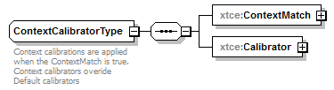
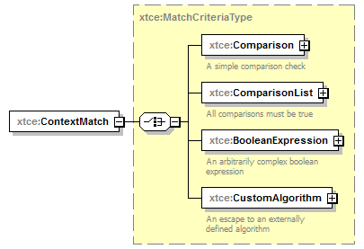
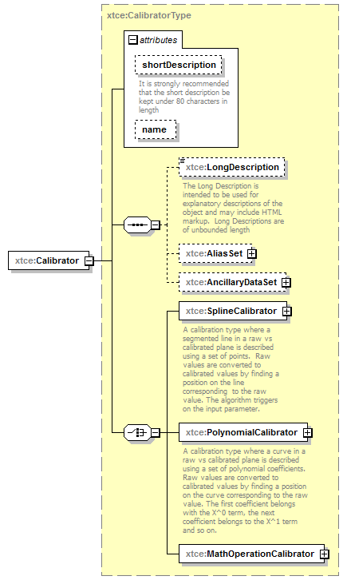

| diagram |  | ||
| namespace | http://www.omg.org/space/xtce | ||
| children | xtce:ContextMatch xtce:Calibrator | ||
| used by |
|
||
| annotation |
|
||
| source | <complexType name="ContextCalibratorType"> <annotation> <documentation xml:lang="en">Context calibrations are applied when the ContextMatch is true. Context calibrators overide Default calibrators</documentation> </annotation> <sequence> <element name="ContextMatch" type="xtce:MatchCriteriaType"/> <element name="Calibrator" type="xtce:CalibratorType"/> <!-- <element name="Context" type="xtce:MatchCriteriaType"/> --> </sequence> </complexType> |
| diagram |  | ||
| namespace | http://www.omg.org/space/xtce | ||
| type | xtce:MatchCriteriaType | ||
| properties |
|
||
| children | xtce:Comparison xtce:ComparisonList xtce:BooleanExpression xtce:CustomAlgorithm | ||
| source | <element name="ContextMatch" type="xtce:MatchCriteriaType"/> |
| diagram |  | ||||||||||||||||||||
| namespace | http://www.omg.org/space/xtce | ||||||||||||||||||||
| type | xtce:CalibratorType | ||||||||||||||||||||
| properties |
|
||||||||||||||||||||
| children | xtce:LongDescription xtce:AliasSet xtce:AncillaryDataSet xtce:SplineCalibrator xtce:PolynomialCalibrator xtce:MathOperationCalibrator | ||||||||||||||||||||
| attributes |
|
||||||||||||||||||||
| source | <element name="Calibrator" type="xtce:CalibratorType"/> |